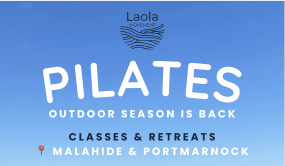

Laola Movement: Outdoor Pilates classes & retreats in Malahide area
LAOLA Movement was founded in 2023 by Taty, a German-born, Ireland-based certified Pilates instructor with a love for movement, connection, and the outdoors. Her mission is to help people feel stronger, more flexible, and ultimately happier in their own skin through joyful, accessible Pilates classes and unforgettable experiences in nature. LAOLA's name is inspired by the German word for 'Mexican wave' (La Ola), a symbol of community, rhythm, and spine mobility, the core of Pilates, reflecting the brand's philosophy of moving together, celebrating our bodies, and riding life's waves on the mat and beyond. What began as a handful of outdoor classes has grown into a movement within the local community. Today, LAOLA offers a mix of outdoor group classes in summer, online sessions in winter, and one-of-a-kind Pilates events that bring like-minded people together, from sea swims to paddleboarding and even Pilates with alpacas. Taty is YMCA accredited through Reformation Studio (Dublin), with additional qualifications in Ante & Postnatal Pilates (APPI, London 2024) and an ongoing focus on women's health and the transitions women go through across life stages. Every class is led by her personally, blending technical precision with fun and human connection. Whether you're a curious beginner or a seasoned mover, LAOLA Movement welcomes all genders and levels, creating a space that's equal parts grounding and uplifting, rooted in movement, laughter, and community care. Outdoor events include Outdoor Pilates & Sea Swims (every Monday at 7pm), Beach Pilates, Sea Swim & Sauna, Sunset Pilates & Stand-Up Paddleboarding, Hidden Reset (a 3-hour mini retreat with Pilates, breathwork, nourishing snacks, local wine, and alpacas), and 'Pilates?! I thought you said pies and lattes' (a morning event with Pilates followed by a light breakfast and pastries). For the latest class schedule, follow @laola_movement on Instagram. Booking is via Wunderbook, email (laola.movement@gmail.com), or Linktree. Testimonials: Alison says, 'I love Taty's classes. She brings energy, encouragement and fun to each class. Taty offers regular slots as well as pop-up activities with a social element and outdoor classes on Paddy's Hill and the beach. This is a welcoming Pilates community and I strongly recommend it.' Roshni says, 'Signed up to Taty's 6-week Pilates programme at the beginning of January. The best first decision I made in 2024. Taty is excellent, she listens to understand your personal goals. Her sessions are well paced, fun and as challenging as you want them to be.' Emma says, 'Completed two courses now with Taty and couldn't recommend her more. Amazing instructor and classes are fun and rewarding.' Sarah says, 'The best Pilates I have done to date! Taty kept it so interesting, and I learned so much about stretch and movement.' More testimonials can be found on the @laola_movement Instagram highlights.
View on Google Maps →